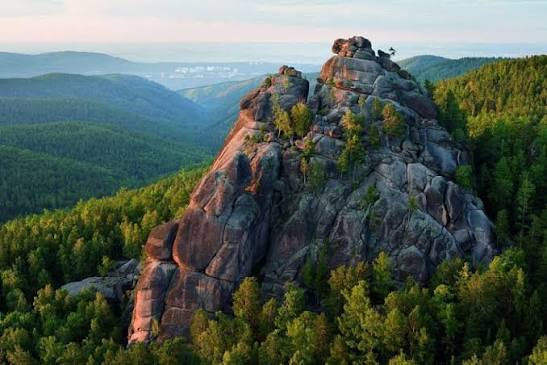

Красноярские Столбы
Природный заповедник в самом сердце Сибири
Красноясркие Столбы знамениты своими величественными скалами. Сюда приходят тысячи туристов, чтобы занаться скалолазанием или просто подышать чистым таёжным воздухом.
